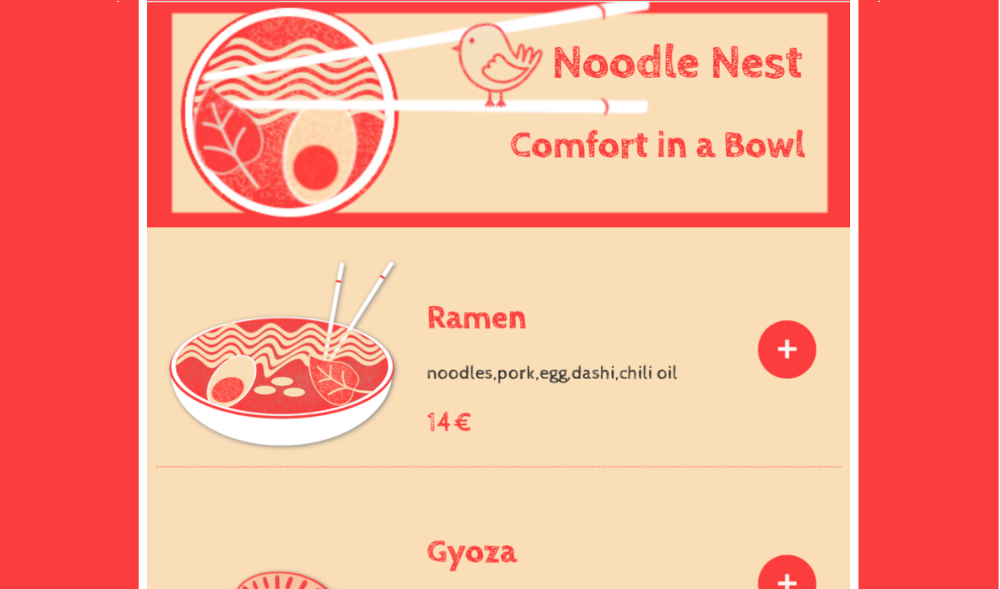
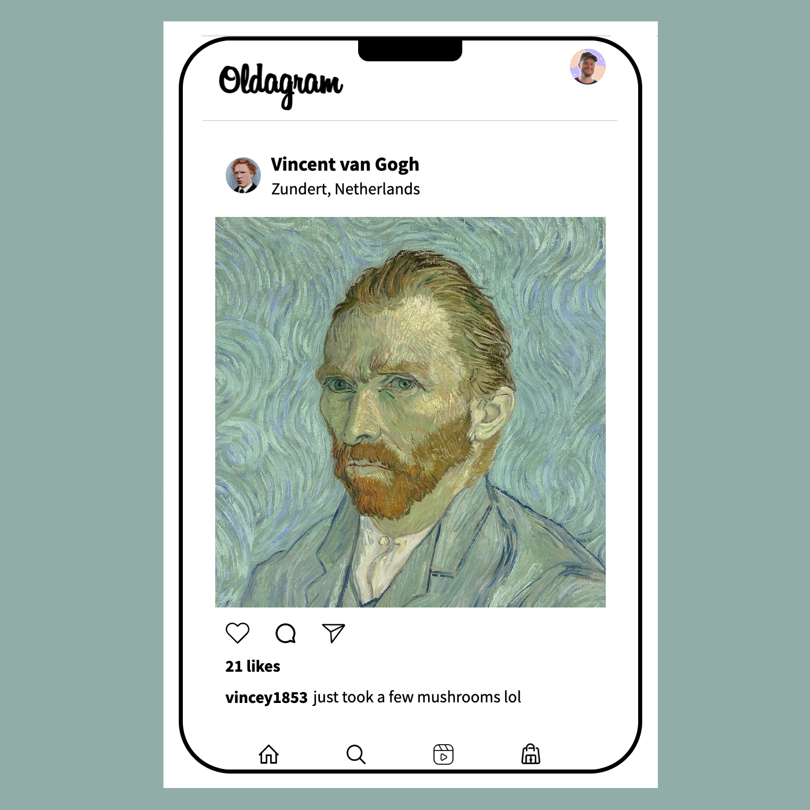
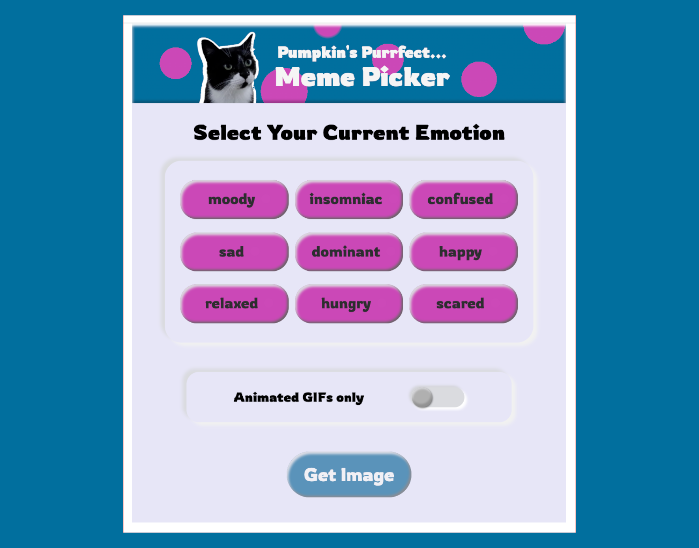
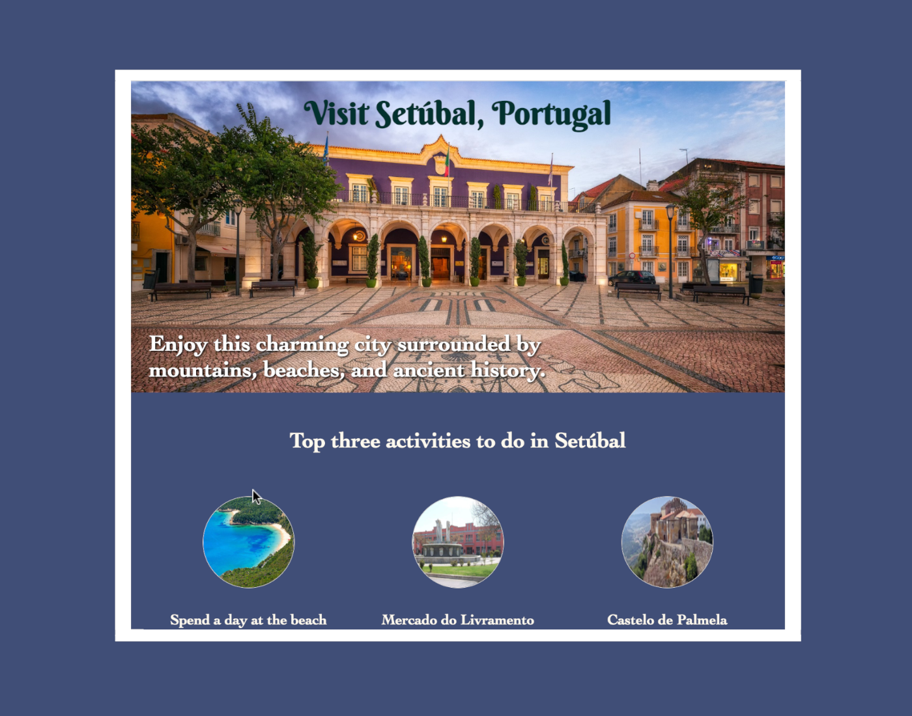

Here are some of my favorite projects that I've completed so far through Scrimba's frontend developer career path:

click the image to see this project on Netlify
Restaurant Ordering App
It took me quite a while to work out all of the Javascript on this one! Despite that, I'm pleased with how it turned out. I improved on the UX by creating a count, instead of having a list of identical items stack up in the order area. I also added a "close" button to the order modal so that the user can modify their order before paying. I created all of the illustrations myself using Gimp and Inkscape.
click the image to see this project on Netlify
Oldagram
With this one, I wanted to make the UX/UI mimic the real thing as much as possible (within my beginner's skillset). I created an iPhone-esque border and hid the scrollbar to help recreate that experience. This was my first time working with font-awesome, as well. Of course I went for the stretch goals by rendering all of the profiles and adding a "like" feature 🤓.
click the image to see this project on Netlify
Pumpin's Purrfect Meme Picker
Admittedly, I went way out of my color-scheme comfort-zone here: I thought everything should pop to show off how the UX/UI differed from the original assignment. I changed the checkbox into a toggle, I switched the standard radio buttons for a bigger and bolder design, I disabled the "get image" button until a choice was made, and I added a bouncy animation to the modal.
click the image to see this project on Netlify